História do MHNJB
O Museu História Natural e Jardim Botânico da UFMG (MHNJB) ocupa uma área, onde, em fins do século XIX, existia a Fazenda Boa Vista. No início do século XX, a fazenda foi desapropriada pela Comissão Construtora de Belo Horizonte, a nova capital de Minas Gerais, e adquirida pelo Governo do Estado com a finalidade de instalação de um Horto Florestal. Em 1912, com o objetivo de impulsionar suas atividades agroindustriais, o Estado de Minas Gerais transformou o Horto Florestal em uma Estação Experimental de Agricultura. Entre agosto de 1938 e novembro de 1947, pesquisadores da Secretaria de Agricultura, da antiga Faculdade de Filosofia e da Academia Mineira de Ciências encontraram material arqueológico nessa região do Horto, que por conta disso também era conhecida como Estação Arqueológica do Horto. Artefatos líticos e cerâmicos encontrados foram então enviados ao Museu Nacional, no Rio de Janeiro, pela ausência, nessa época, de um museu de História Natural em Belo Horizonte.
Em 1953, a estação experimental deu lugar ao Instituto Agronômico, extinto em 1968. Em seguida, a área do Instituto foi desmembrada e uma parte com 439.000 m² foi cedida à UFMG mediante um Convênio de Comodato, assinado, em 12 de agosto de 1969, entre o Estado de Minas Gerais e a Universidade, que nela, posteriormente, instalou o seu museu. Em 1973, outro Convênio de Comodato firmado entre a Prefeitura de Belo Horizonte (PBH) e a UFMG anexou mais 150.000 m² de mata nativa contígua à área do Museu de História Natural, para a criação de um Jardim Botânico. Em 1979, a área total do museu, incluindo essa do Jardim Botânico, foi finalmente doada à UFMG.
A origem do Museu de História Natural remete à extinta Sociedade Mineira de Naturalistas. Fundada na Faculdade de Filosofia da UFMG, em 19 de outubro de 1956, a Sociedade objetivava estimular atividades ligadas às pesquisas científicas e criar um Museu de História Natural em Belo Horizonte. Em 1947, o prof. Anibal Mattos, presidente da Academia de Ciências de Minas Gerais, e considerando a importância do sítio arqueológico da região do Horto, em Belo Horizonte, já destacava a necessidade de tal museu para Belo Horizonte. Apesar dos esforços desses cientistas e de estudantes do curso de História Natural para criação do Museu nessa época, foi só no fim da década de 1960 que a idéia começou a ser concretizada.
Em 28 de fevereiro de 1968, pelo Decreto nº 62317, do Presidente Arthur da Costa e Silva, determinou-se uma reformulação da estrutura das universidades brasileiras. O ato, conhecido como Reforma Universitária, implicou em muitas mudanças e instituiu, entre várias medidas, a criação de um Museu de História Natural. O Instituto Agronômico, então, com suas pesquisas paralisadas e sua área verde cada vez mais devastada, foi o local escolhido para sediar o Museu. Após a necessária negociação com o Estado e com base em um levantamento de toda a área, o museu foi instalado em parte do terreno do Instituto.
Jardim Botânico: antecedentes e origem
A área ocupada pelo Museu de História Natural e Jardim Botânico da UFMG (MHNJB/UFMG) teve vários usos ao longo da sua história, passando de fazenda a Horto Florestal (1912) e Instituto de Experimentação e Pesquisa Agropecuárias (1947). Posteriormente convertida em Instituto Agronômico (1953), alcançou reconhecimento internacional e muito contribuiu para o desenvolvimento de pesquisas agronômicas e de práticas de agricultura em todo o estado de Minas Gerais. No final da década de 60, suas pesquisas foram interrompidas e sua área dividida e doada a entidades sem ligação com a agricultura. Uma das fatias desse terreno foi transferida para a UFMG, onde, posteriormente, instalou seu Museu de História Natural, criado pelo Decreto Lei nº 62.317 de 28 de fevereiro de 1968 e, em 1973, criou também um Jardim Botânico, através de um Convênio de Comodato firmado entre a Prefeitura de Belo Horizonte (PBH) e a UFMG, que anexou ao Museu mais 150.000 m2 de mata nativa, contígua à área do Museu de História Natural. A área total do Museu, incluindo a do Jardim Botânico, foi doada à UFMG em 1979.
O reconhecimento e o registro da instituição como Jardim Botânico, contudo, apenas foi concedido ao MHNJB pelo Ministério do Meio Ambiente em março de 2010, após a elaboração e implantação do seu Plano de Ação, de acordo com as exigências da legislação vigente (Resolução CONAMA nº 339 de 25/09/03). Para implantação das ações que possibilitaram o registro da instituição foi fundamental a ampliação e qualificação do seu corpo técnico, que atualmente conta com biólogos, técnico em agropecuária e engenheiro florestal, além da equipe de jardineiros e auxiliares.
 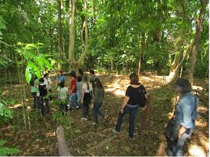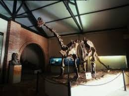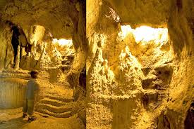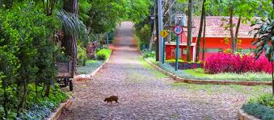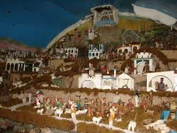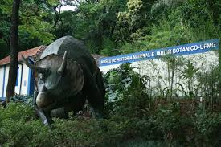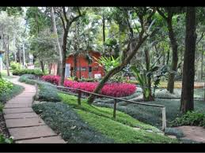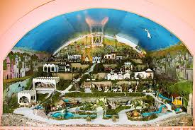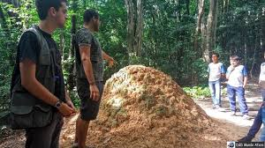
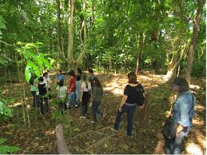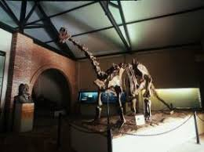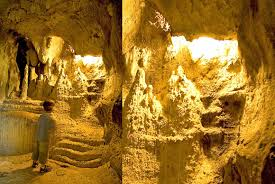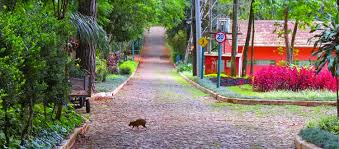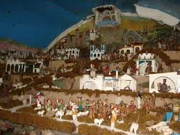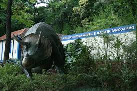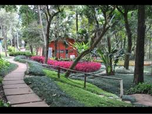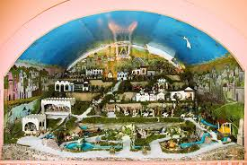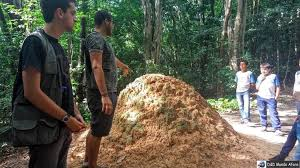